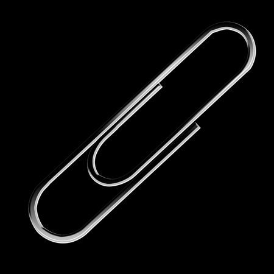

Home Page
Throughout history the paperclip has serviced as the clearest indicator of the rise of modern industry. To ignore it as a signifigant invention would be more dissmissive than I'd be comfortable with, as such, I will be doing my project on Paperclips.
by Sky Pierce
Table of Contents
Paperclips
